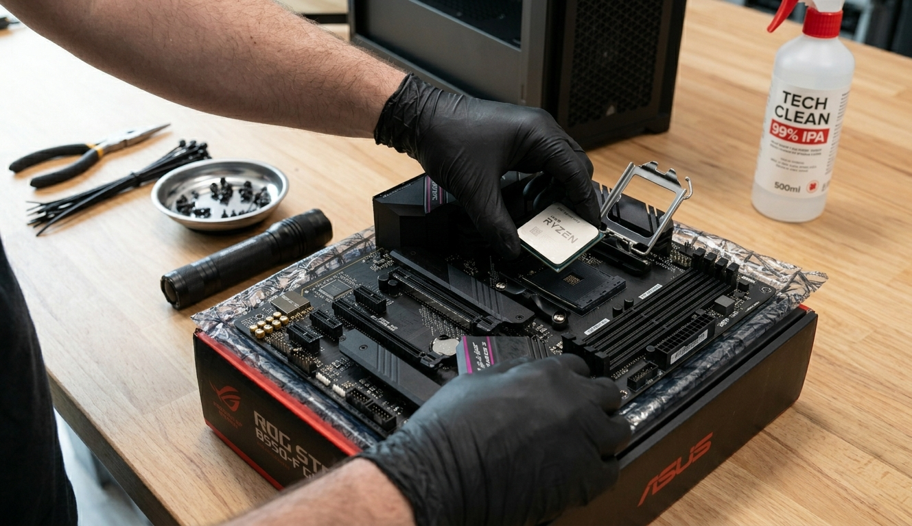
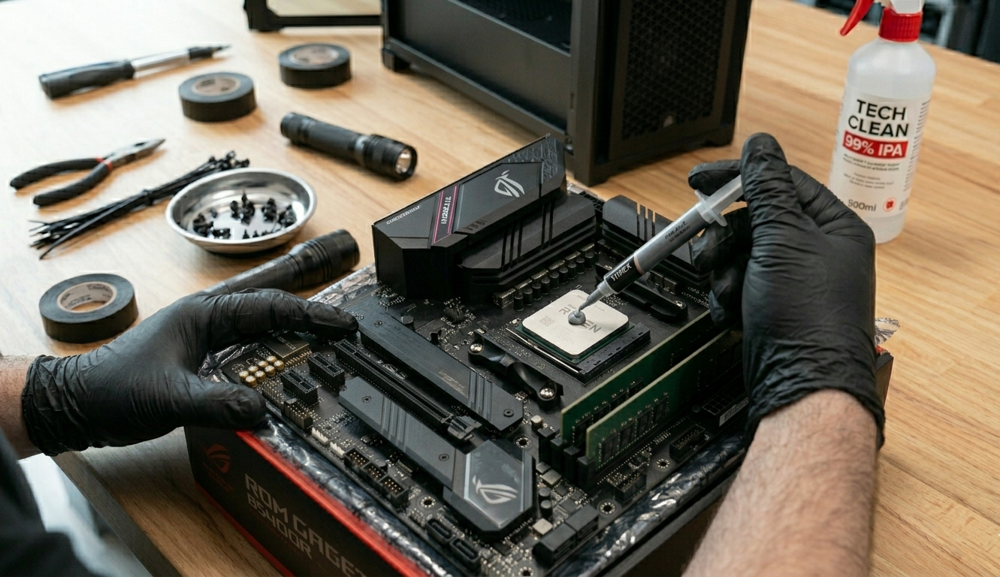
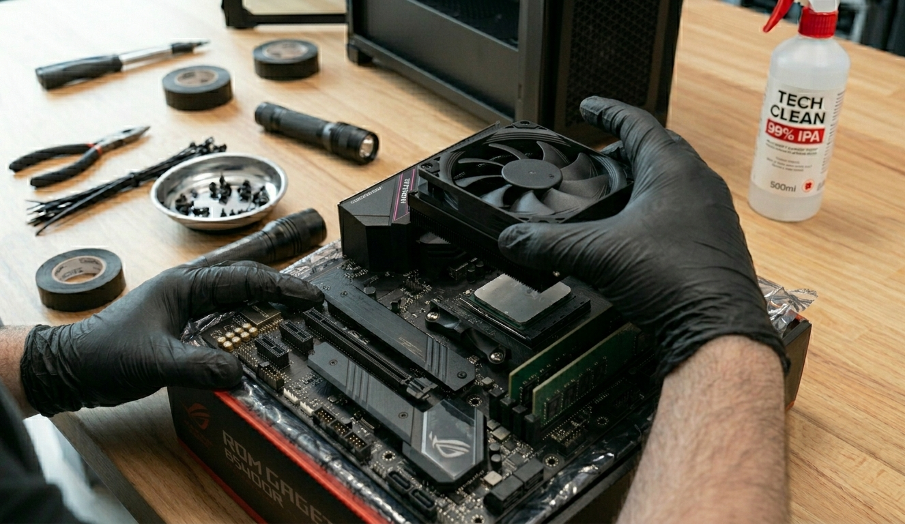
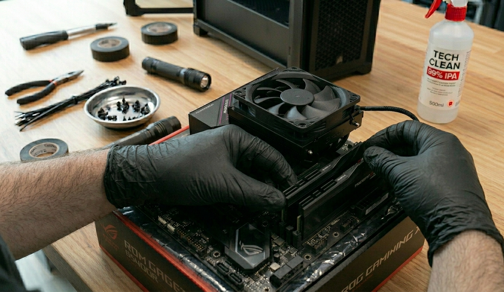
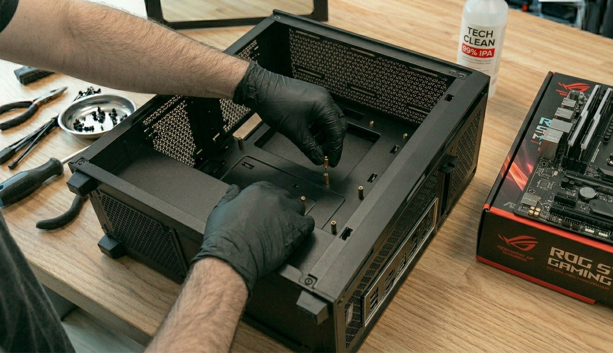
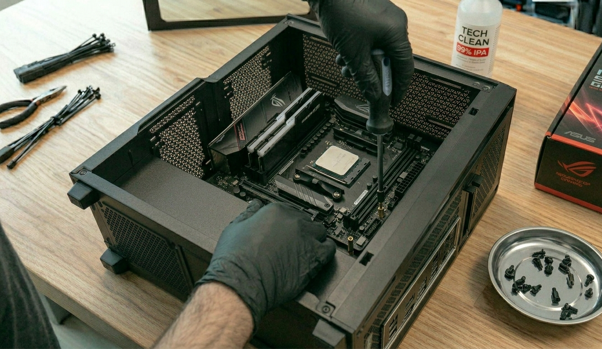
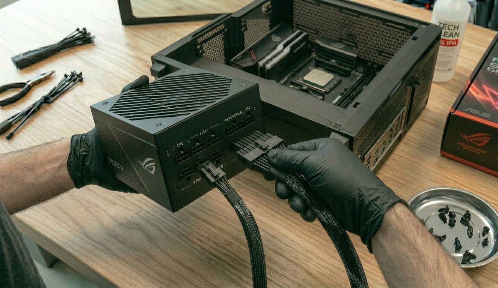
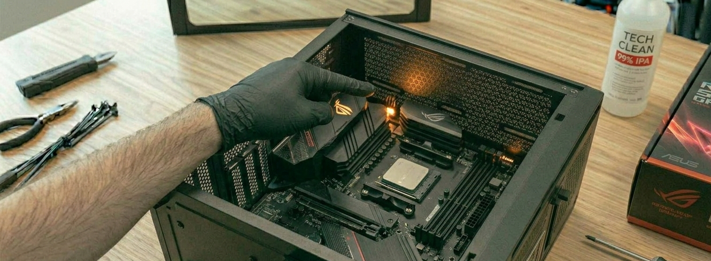
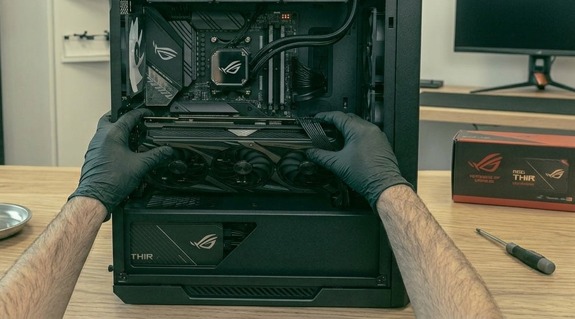
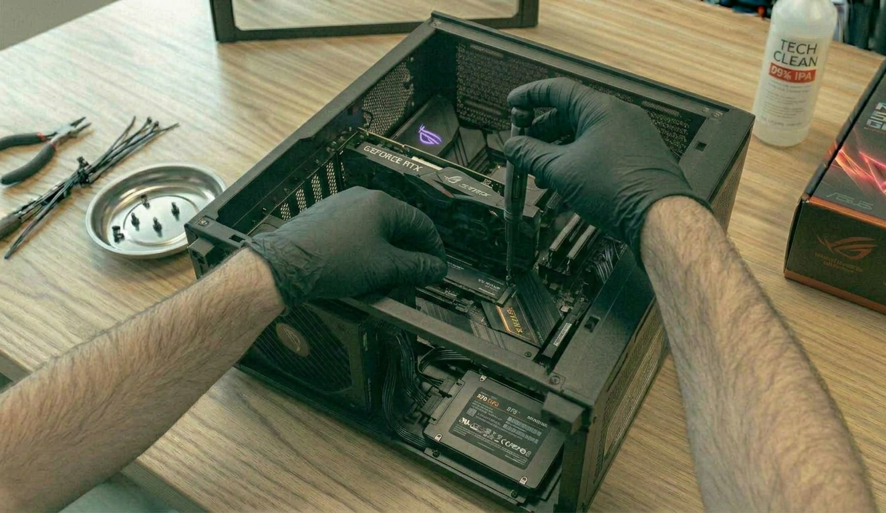

A la hora de montar un ordenador, es muy importante disponer de un espacio de trabajo adecuado en el que se pueda realizar todo lo necesario para dar forma al equipo. Para ello, conviene trabajar sobre una mesa lo suficientemente amplia, ordenada y bien iluminada, además de reunir las herramientas necesarias antes de comenzar.
Preparación previa
Antes de empezar el montaje, es recomendable revisar que se dispone de todas las piezas, una superficie limpia de trabajo y los utensilios adecuados para evitar interrupciones durante el proceso.
Herramientas necesarias
- Destornillador, preferiblemente un Phillips #2, para atornillar la mayoría de componentes a la torre.
- Alicates, útiles en tareas concretas como cortar bridas o ajustar ciertos elementos.
- Bridas, fundamentales para ordenar los cables dentro del chasis y mejorar el flujo de aire.
- Bandeja magnética, muy útil para dejar tornillos y piezas metálicas sin riesgo de pérdida.
- Linterna, práctica para revisar zonas poco visibles dentro de la caja.
- Alcohol IPA, empleado para limpiar componentes electrónicos y muy útil también en tareas de mantenimiento.
Atención
Durante el montaje hay que evitar forzar conectores, tocar contactos sensibles sin necesidad y aplicar una presión excesiva sobre la placa base, el procesador o la tarjeta gráfica.
Proceso de ensamblaje del equipo
Una vez que la mesa de trabajo y las herramientas están listas, es hora de ponerse manos a la obra. A continuación se describe el montaje de forma secuencial, acompañado de imágenes del proceso.
1
Preparar la placa base y montar la CPU
Lo primero es situar la placa base sobre la mesa de trabajo y colocar el procesador en su socket correspondiente. Este paso debe realizarse con cuidado, respetando la orientación correcta del procesador y evitando cualquier presión innecesaria sobre los pines o contactos.

2
Aplicar pasta térmica e instalar el disipador
Una vez instalada la CPU, se aplica una pequeña cantidad de pasta térmica sobre el procesador, normalmente en forma de guisante. Después se coloca el disipador encima y se fija siguiendo el sistema de anclaje correspondiente.

3
Conectar el ventilador del disipador
Cuando el sistema de refrigeración ya está instalado, se conecta el cable del ventilador a la cabecera CPU_FAN de la placa base. Este paso es importante para que el sistema pueda controlar correctamente la refrigeración del procesador.

4
Instalar la memoria RAM
El siguiente paso consiste en colocar los módulos de memoria RAM. Según los modelos de memoria y la placa base utilizada, lo ideal es aprovechar la configuración Dual Channel, colocándolos en las ranuras recomendadas por el fabricante.

5
Preparar la caja y colocar los standoffs
Con la placa base ya preparada, toca instalarla en la caja. Antes de hacerlo, se colocan los standoffs, que elevan la placa sobre el chasis y ayudan a prevenir cortocircuitos al evitar el contacto directo con el metal de la torre.

6
Instalar y atornillar la placa base
Después se introduce la placa base en la caja, asegurándose de que el panel de conexiones trasero encaje correctamente en la abertura correspondiente. Una vez alineada, se atornilla de forma suave y progresiva.

7
Preparar e instalar la fuente de alimentación
Antes de fijar la fuente de alimentación a la caja, es recomendable conectar primero los cables principales, como el ATX de 24 pines y el EPS de 8 pines, ya que así se trabaja con mayor comodidad. Después se orienta correctamente el ventilador y se atornilla a la torre.

8
Primera comprobación POST
En este punto puede realizarse un primer encendido para comprobar el POST, es decir, la verificación inicial que hace la placa base sobre los componentes instalados. En placas actuales suele hacerse mediante LEDs de diagnóstico. Lo normal en esta fase es que se detecte la ausencia de la tarjeta gráfica.

9
Instalar la tarjeta gráfica
Ahora llega el turno de la GPU. Muchas placas modernas disponen de una palanca de liberación que facilita la instalación. La gráfica se alinea con la ranura PCIe correspondiente y se introduce con firmeza, pero sin aplicar fuerza excesiva.

10
Instalar el almacenamiento y finalizar
Uno de los pasos finales es añadir el almacenamiento. Actualmente lo más habitual es usar un M.2 como unidad principal por su elevada velocidad. Para instalarlo, se inserta en su ranura, se presiona hacia abajo y se atornilla. Si se desea, también pueden añadirse unidades SSD o HDD adicionales. Con todo listo, se realiza el encendido final, se instala el sistema operativo desde un USB y, una vez en el escritorio, se descargan e instalan los drivers necesarios para dejar el equipo completamente optimizado.

Revisión y mantenimiento preventivo
Una vez montado el ordenador, conviene realizar pequeñas tareas de mantenimiento preventivo para garantizar su buen funcionamiento a medio y largo plazo.
Limpieza periódica
Es recomendable eliminar el polvo acumulado en ventiladores, filtros, rejillas y disipadores, ya que una acumulación excesiva puede empeorar la refrigeración del equipo.
Revisión del cableado
Un cableado ordenado no solo mejora la estética interior, sino también el flujo de aire y la facilidad para futuras ampliaciones o reparaciones.
Comprobación de temperaturas
Tras el montaje y durante el uso del equipo, es útil revisar las temperaturas para detectar posibles problemas de ventilación o mala aplicación de pasta térmica.
Actualización de drivers
Instalar y mantener actualizados los controladores del chipset, la tarjeta gráfica, la red y el almacenamiento ayuda a que el ordenador funcione de forma estable y optimizada.